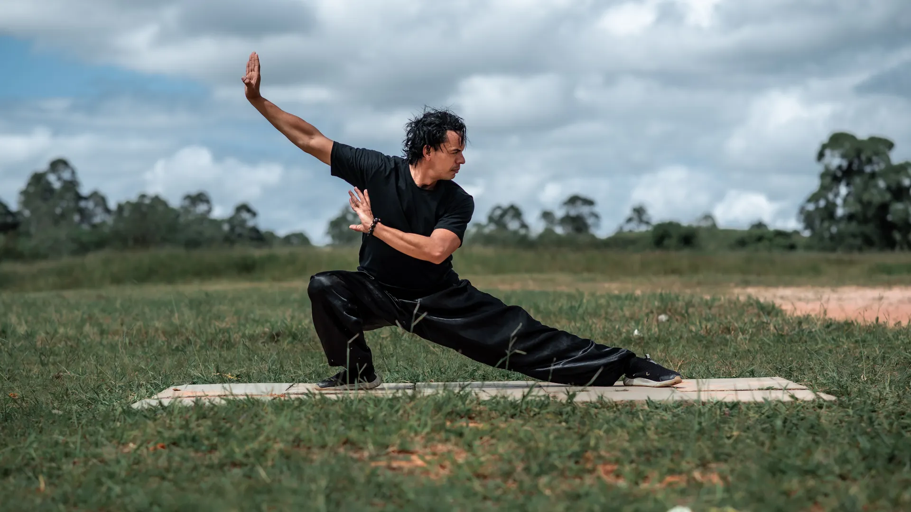
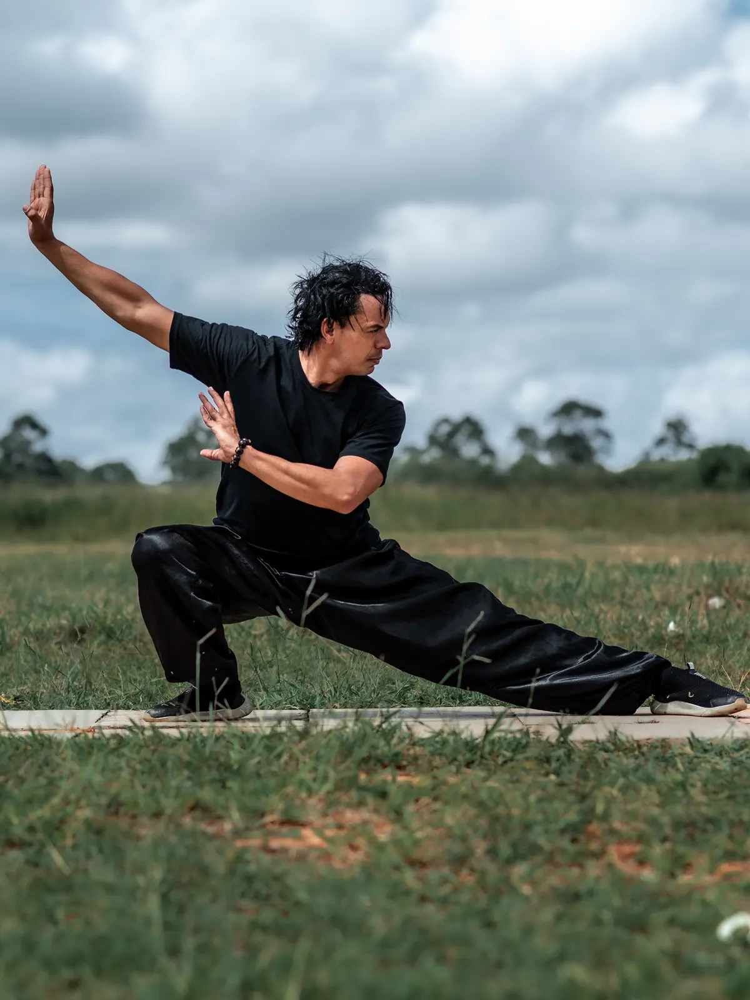
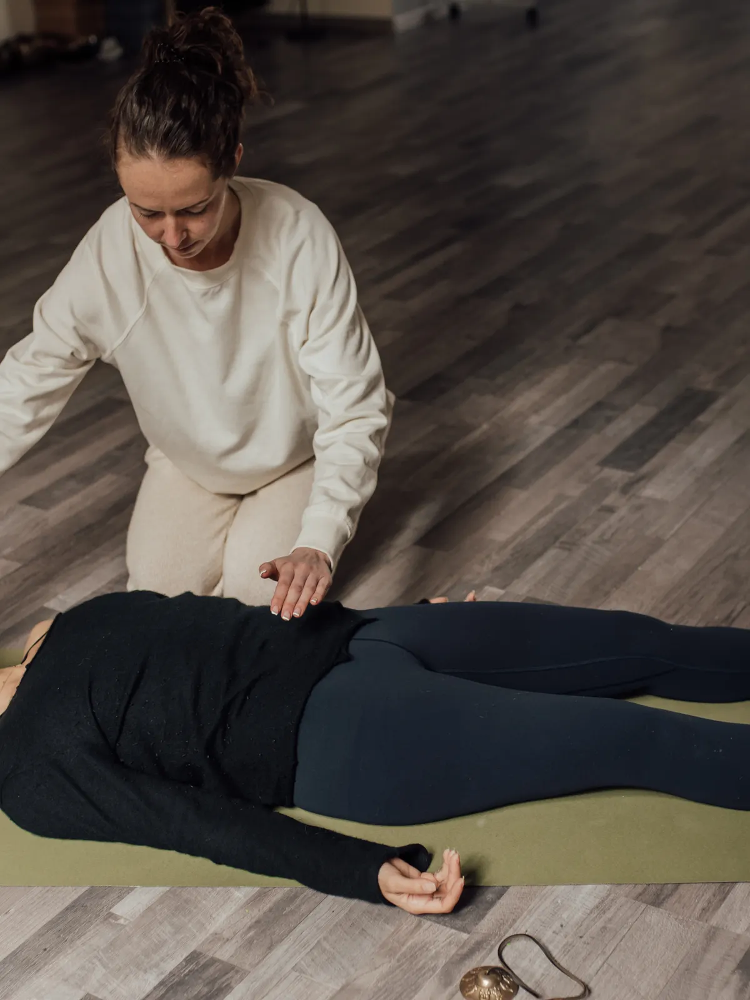
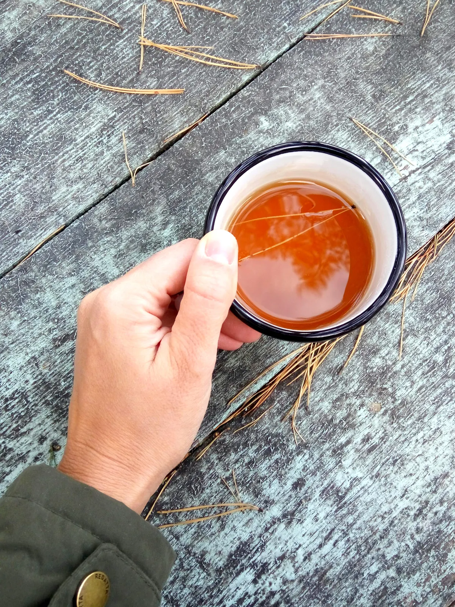

El bar, tu primera parada
La entrada a AIRE es también la recepción: infusiones y panificados de estación, para llegar antes de tu turno o quedarte un rato después.

Taichi · Masajes · Infusiones
Entrá por el bar, subí a tu masaje o a tu clase de taichi: todo en el mismo lugar, en La Rioja.
QUÉ ES AIRE
AIRE reúne clases de taichi, masajes y un bar de infusiones y panificados bajo el mismo techo. No hace falta elegir uno solo: cada piso resuelve una cosa distinta, y todos comparten la misma calma.
CÓMO ES EL LUGAR

La entrada a AIRE es también la recepción: infusiones y panificados de estación, para llegar antes de tu turno o quedarte un rato después.
Un espacio tranquilo para soltar tensión, con distintos masajes según lo que tu cuerpo necesite ese día.
El piso más alto, con más luz: clases grupales e individuales de taichi, para moverte despacio y respirar mejor.
CLASES Y SERVICIOS
Duración orientativa de cada encuentro. Coordinamos día y horario por WhatsApp.
Clase grupal, 60 minutos. Iniciación a la forma y a la respiración, sin experiencia previa.
60 min · grupal Consultar por WhatsAppClase grupal, 60 minutos, para quienes ya vienen practicando y quieren profundizar la forma.
60 min · grupal Consultar por WhatsAppClase personalizada, 45 minutos, a tu ritmo y con atención exclusiva.
45 min · individual Consultar por WhatsAppIndividual, 50 minutos. Pensado para tensión y sobrecarga muscular.
50 min · individual Consultar por WhatsAppIndividual, 50 minutos, con aceites aromáticos. Para bajar un cambio.
50 min · individual Consultar por WhatsAppIndividual, 30 minutos. Reflexología suave, ideal para sumar a otro servicio.
30 min · individual Consultar por WhatsApp
RESERVÁ TU TURNO
Todavía no tenemos calendario online: elegís el servicio, nos escribís y te confirmamos el día y el horario. Así de simple.
POR QUÉ AIRE
Movimiento, contacto y descanso bajo el mismo techo, sin tener que ir de un lado a otro de la ciudad.
Las clases de taichi mantienen un grupo reducido para que se note la atención, no un salón lleno.
Clases grupales o individuales, turnos que se coordinan con vos: nada de horarios cerrados.
TU PRIMERA VEZ EN AIRE
Te recibimos en planta baja. Si querés, arrancás con una infusión mientras esperás tu turno.
Masaje en el piso 1 o clase de taichi en el piso 2, según lo que hayas reservado.
Nadie te apura a la salida. Si querés quedarte un rato más abajo, el bar sigue abierto.
PREGUNTAS FRECUENTES
No. Hay un grupo para quienes recién empiezan y otro para quienes ya vienen practicando.
Ropa cómoda y ganas de moverte despacio. El resto lo ponemos nosotros.
No, podés reservar un masaje sin estar anotado en taichi.
Sí, el bar de infusiones está abierto aunque no tengas ningún turno ese día.
Por WhatsApp: elegís el servicio y coordinamos el día y el horario.
En La Rioja capital. Te compartimos la dirección exacta al coordinar tu turno.
CÓMO LLEGAR
Te compartimos la dirección exacta al coordinar tu turno por WhatsApp.
+54 9 380 435-8295
Un té, un masaje o tu primera clase de taichi. Nosotros coordinamos el resto.
Reservá tu turno